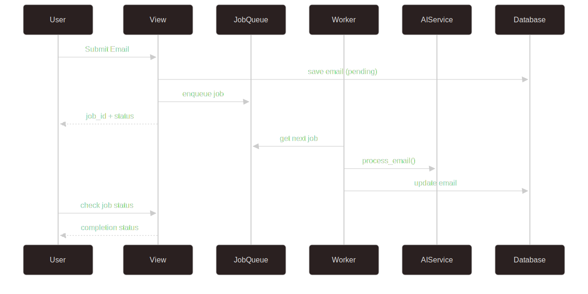
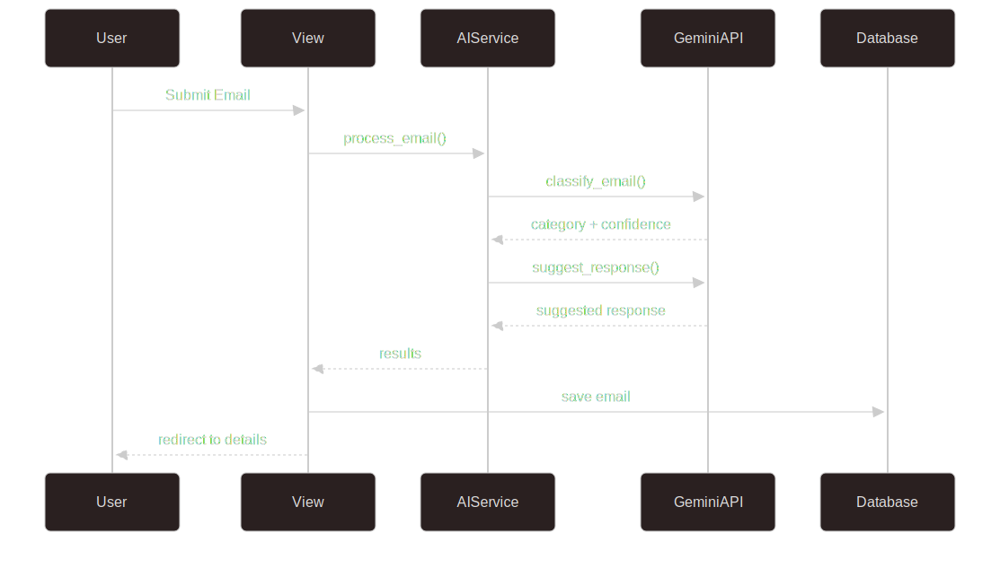

Visão Geral da Arquitetura¶
Estrutura do Sistema¶
O Email Classifier System segue uma arquitetura baseada em Django com processamento assíncrono e integração com APIs de IA.
Componentes Principais¶
1. Camada de Apresentação¶
- Views Django: Renderização de templates e APIs REST
- Templates: Interface web para submissão e visualização
- CORS Middleware: Suporte a requisições cross-origin
2. Camada de Negócio¶
- AI Service: Integração com Google Gemini AI
- Job Queue: Sistema de filas para processamento assíncrono
- Rate Limiter: Controle de uso de APIs externas
- Utils: Processamento de arquivos PDF/TXT
3. Camada de Dados¶
- Models Django: Email, com campos de classificação
- SQLite: Banco de dados para desenvolvimento
- File Storage: Upload e armazenamento de arquivos
Fluxo de Processamento¶

Processamento Assíncrono (Recomendado)¶

Padrões Arquiteturais¶
Singleton Pattern¶
- JobQueue: Instância única para toda a aplicação
- RateLimiter: Controle centralizado de rate limiting
Factory Pattern¶
- Job Creation: Criação de jobs baseada em tipos registrados
- Handler Registration: Registro dinâmico de manipuladores
Observer Pattern¶
- Job Callbacks: Notificações quando jobs são concluídos
- Status Updates: Atualizações automáticas de status
Configurações de Ambiente¶
O sistema utiliza variáveis de ambiente para configuração:
GEMINI_API_KEY: Chave da API do Google GeminiDEBUG: Modo de debug do DjangoSECRET_KEY: Chave secreta do DjangoALLOWED_HOSTS: Hosts permitidos